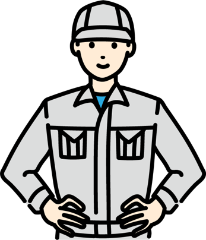

先ほどは体温の調節について学んできました。
ゾウは水浴びで体温を下げ、犬は口を開けて舌を出すことで体温を下げています。
人は汗を流すことでより効率的に体温調節をしますが、一方でその弊害もあります。
それが今から説明する体液の調節です。早速その内容を見ていきましよう。
通常、汗は血液から作られます。その際、
ナトリウムやカリウム等の電解質も汗と
共に排出されることで、血液中の水分と
ナトリウムのバランスが崩れ、熱けいれん
等の症状を引き起こします。
左右のボタンを押して画像を切り替えましょう。
体が暑さに慣れること。暑い日が続くと体が
暑さに慣れて、暑さに強くなります。
暑熱順化できている時は汗をかきやすくなり、
体温が上昇しやすくなります。
つまり熱中症になりにくいということです。
目安：連続5日間、2時間以上暑い環境で
汗をかくこと

引用元：https://www.netsuzero.jp/learning/le15
まず、右のグラフを見てください。
発汗量と汗のナトリウム濃度の関係を表していま
す。暑熱順化してない人は汗の量が少ないですが
順化が進むと増えていくことがわかります。
4~7日後
汗をたくさんかくようになり、効率的に体温調節
が可能に！
2~4週後
ナトリウム喪失の抑制も可能に！
引用元：https://www.netsuzero.jp/learning/le15
・十分な水分をとる。
20~30分毎にカップ1~2杯
・水分だけでなく塩分も補給する。
塩分0.1~0.2%（厚生労働省推奨）
・のどの渇きに関係なく飲む。
渇きを感じた時点で既に遅い